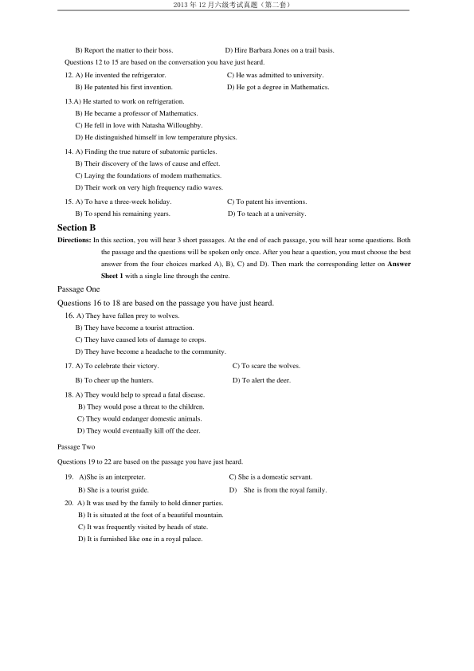
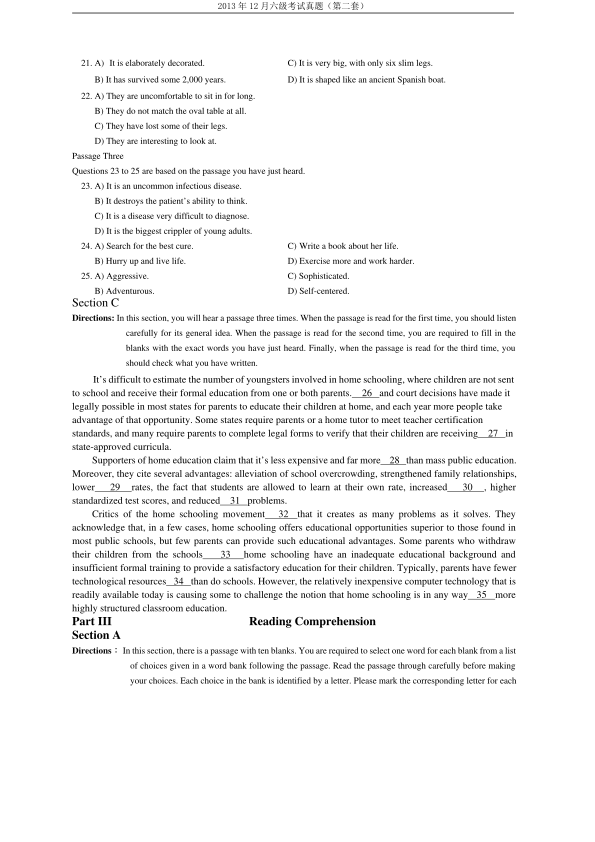
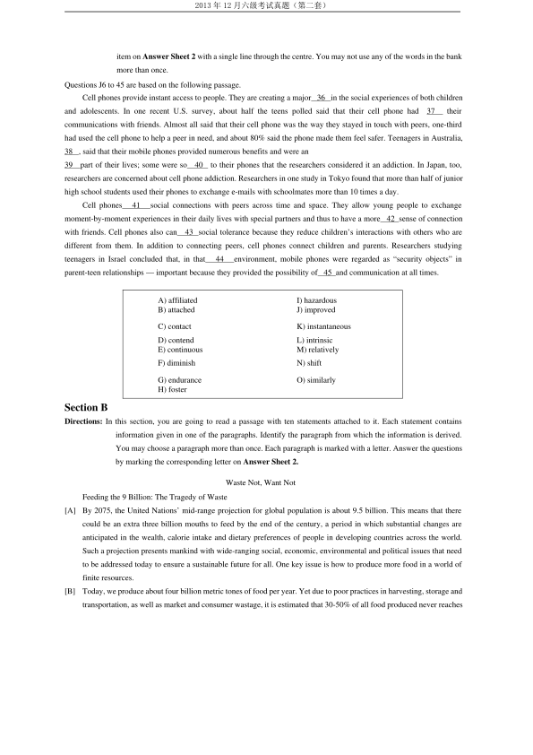
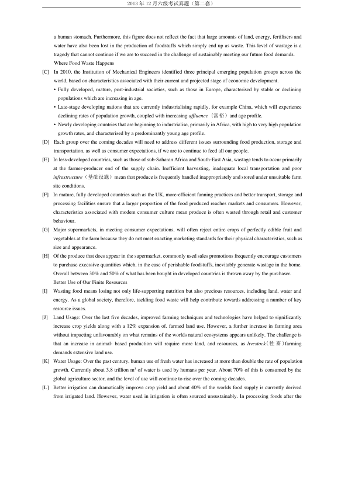
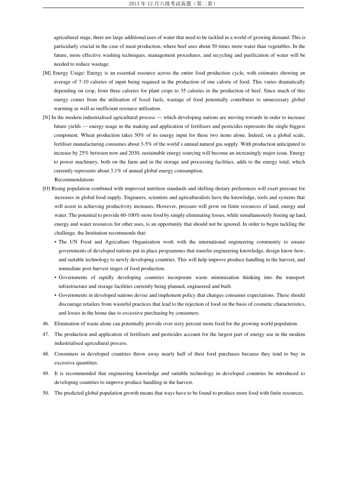
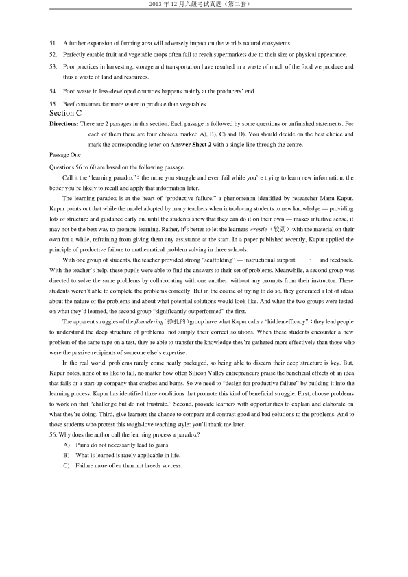
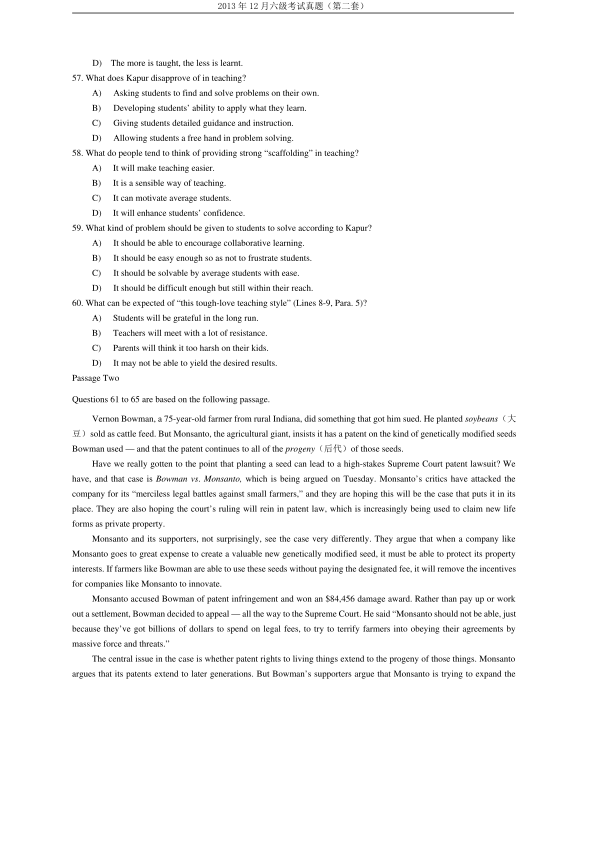
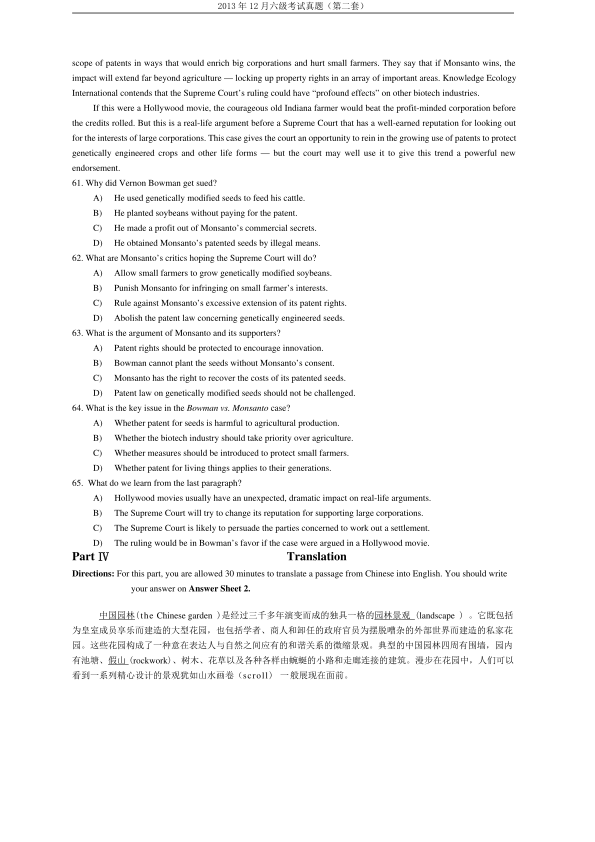

第 1 / 9 页

2013 年12 月六级考试真题（第二套）
2013 年12 月六级考试真题（第二套）
PartⅠ
Writing
Directions: For this part you are allowed 30 minutes to write an essay on happiness by referring to the saying “Happiness
is not the absence of problems, but the ability to deal with them.” You can cite examples to illustrate your
point and then explain how you can develop your ability to deal with problems and be happy. You
should write at least 150 words but no more than 200 words.
Part II
Listening Comprehension
Section A
Directions: In this section, you will hear 8 short conversations and 2 long conversations. At the end of each conversation,
one or more questions will be asked about what was said. Both the conversation and the questions will be
spoken only once. After each question there will be a pause. During the pause, you must read the four
choices marked A). B), C) and D), and decide which is the best answer. Then mark the corresponding letter
on Answer Sheet 1 with a single line through the centre.
1. A) The rock band needs more hours of practice.
B) The rock band is going to play here for a month.
C) He appreciates the woman’s help with the band.
D) Their hard work has resulted in a big success.
2. A) Travel overseas on his own.
C) Go on a diving tour in Europe.
B) Join a package tour to Mexico.
D) Add 300 dollars to his budget.
3. A) Something unexpected has happened.
C) To avoid more work later on.
B) In case some problem should occur.
D) To make better preparations.
4. A) The man is going to renew his membership in a fitness center.
B) The woman asked for a free pass to try out the facilities.
C) The man can try out the facilities before he becomes a member.
D) The woman can give the man a discount if he joins the club now.
5. A) He is not fit to study science.
C) He is worried about the test.
B) He is not afraid of challenge.
D) He is going to drop the physics course.
6. A) Buy something special for Gary.
C) Pay for part of the picnic food.
B) Invite Gary’s family to dinner.
D) Take some food to the picnic.
7. A labor dispute at a bus company.
C) A corporate takeover.
B) Bus drivers’ working conditions.
D) Public transportation.
8. A) Their sales overseas.
C) The check just deposited.
B) The bank statement.
D) The payment for an order.
Questions 9 to 11 are based on the conversation you have just heard.
9. A) A private secretary.
C) A shop assistant.
B) A hotel receptionist.
D) A sales manager.
10. A) Appearance.
C) Voice.
B) Intelligence.
D) Manners.
11. A) Arrange one more interview.
C) Offer the job to David Wallace.
查看 / 复制本页文字
2013 年12 月六级考试真题（第二套） 2013 年12 月六级考试真题（第二套） PartⅠ Writing Directions: For this part you are allowed 30 minutes to write an essay on happiness by referring to the saying “Happiness is not the absence of problems, but the ability to deal with them.” You can cite examples to illustrate your point and then explain how you can develop your ability to deal with problems and be happy. You should write at least 150 words but no more than 200 words. Part II Listening Comprehension Section A Directions: In this section, you will hear 8 short conversations and 2 long conversations. At the end of each conversation, one or more questions will be asked about what was said. Both the conversation and the questions will be spoken only once. After each question there will be a pause. During the pause, you must read the four choices marked A). B), C) and D), and decide which is the best answer. Then mark the corresponding letter on Answer Sheet 1 with a single line through the centre. 1. A) The rock band needs more hours of practice. B) The rock band is going to play here for a month. C) He appreciates the woman’s help with the band. D) Their hard work has resulted in a big success. 2. A) Travel overseas on his own. C) Go on a diving tour in Europe. B) Join a package tour to Mexico. D) Add 300 dollars to his budget. 3. A) Something unexpected has happened. C) To avoid more work later on. B) In case some problem should occur. D) To make better preparations. 4. A) The man is going to renew his membership in a fitness center. B) The woman asked for a free pass to try out the facilities. C) The man can try out the facilities before he becomes a member. D) The woman can give the man a discount if he joins the club now. 5. A) He is not fit to study science. C) He is worried about the test. B) He is not afraid of challenge. D) He is going to drop the physics course. 6. A) Buy something special for Gary. C) Pay for part of the picnic food. B) Invite Gary’s family to dinner. D) Take some food to the picnic. 7. A labor dispute at a bus company. C) A corporate takeover. B) Bus drivers’ working conditions. D) Public transportation. 8. A) Their sales overseas. C) The check just deposited. B) The bank statement. D) The payment for an order. Questions 9 to 11 are based on the conversation you have just heard. 9. A) A private secretary. C) A shop assistant. B) A hotel receptionist. D) A sales manager. 10. A) Appearance. C) Voice. B) Intelligence. D) Manners. 11. A) Arrange one more interview. C) Offer the job to David Wallace.
第 2 / 9 页

2013 年12 月六级考试真题（第二套）
B) Report the matter to their boss.
D) Hire Barbara Jones on a trail basis.
Questions 12 to 15 are based on the conversation you have just heard.
12. A) He invented the refrigerator.
C) He was admitted to university.
B) He patented his first invention.
D) He got a degree in Mathematics.
13.A) He started to work on refrigeration.
B) He became a professor of Mathematics.
C) He fell in love with Natasha Willoughby.
D) He distinguished himself in low temperature physics.
14. A) Finding the true nature of subatomic particles.
B) Their discovery of the laws of cause and effect.
C) Laying the foundations of modem mathematics.
D) Their work on very high frequency radio waves.
15. A) To have a three-week holiday.
C) To patent his inventions.
B) To spend his remaining years.
D) To teach at a university.
Section B
Directions: In this section, you will hear 3 short passages. At the end of each passage, you will hear some questions. Both
the passage and the questions will be spoken only once. After you hear a question, you must choose the best
answer from the four choices marked A), B), C) and D). Then mark the corresponding letter on Answer
Sheet 1 with a single line through the centre.
Passage One
Questions 16 to 18 are based on the passage you have just heard.
16. A) They have fallen prey to wolves.
B) They have become a tourist attraction.
C) They have caused lots of damage to crops.
D) They have become a headache to the community.
17. A) To celebrate their victory.
C) To scare the wolves.
B) To cheer up the hunters.
D) To alert the deer.
18. A) They would help to spread a fatal disease.
B) They would pose a threat to the children.
C) They would endanger domestic animals.
D) They would eventually kill off the deer.
Passage Two
Questions 19 to 22 are based on the passage you have just heard.
19. A)She is an interpreter.
C) She is a domestic servant.
B) She is a tourist guide.
D)
She is from the royal family.
20. A) It was used by the family to hold dinner parties.
B) It is situated at the foot of a beautiful mountain.
C) It was frequently visited by heads of state.
D) It is furnished like one in a royal palace.
查看 / 复制本页文字
2013 年12 月六级考试真题（第二套） B) Report the matter to their boss. D) Hire Barbara Jones on a trail basis. Questions 12 to 15 are based on the conversation you have just heard. 12. A) He invented the refrigerator. C) He was admitted to university. B) He patented his first invention. D) He got a degree in Mathematics. 13.A) He started to work on refrigeration. B) He became a professor of Mathematics. C) He fell in love with Natasha Willoughby. D) He distinguished himself in low temperature physics. 14. A) Finding the true nature of subatomic particles. B) Their discovery of the laws of cause and effect. C) Laying the foundations of modem mathematics. D) Their work on very high frequency radio waves. 15. A) To have a three-week holiday. C) To patent his inventions. B) To spend his remaining years. D) To teach at a university. Section B Directions: In this section, you will hear 3 short passages. At the end of each passage, you will hear some questions. Both the passage and the questions will be spoken only once. After you hear a question, you must choose the best answer from the four choices marked A), B), C) and D). Then mark the corresponding letter on Answer Sheet 1 with a single line through the centre. Passage One Questions 16 to 18 are based on the passage you have just heard. 16. A) They have fallen prey to wolves. B) They have become a tourist attraction. C) They have caused lots of damage to crops. D) They have become a headache to the community. 17. A) To celebrate their victory. C) To scare the wolves. B) To cheer up the hunters. D) To alert the deer. 18. A) They would help to spread a fatal disease. B) They would pose a threat to the children. C) They would endanger domestic animals. D) They would eventually kill off the deer. Passage Two Questions 19 to 22 are based on the passage you have just heard. 19. A)She is an interpreter. C) She is a domestic servant. B) She is a tourist guide. D) She is from the royal family. 20. A) It was used by the family to hold dinner parties. B) It is situated at the foot of a beautiful mountain. C) It was frequently visited by heads of state. D) It is furnished like one in a royal palace.
第 3 / 9 页

2013 年12 月六级考试真题（第二套）
21. A) It is elaborately decorated.
C) It is very big, with only six slim legs.
B) It has survived some 2,000 years.
D) It is shaped like an ancient Spanish boat.
22. A) They are uncomfortable to sit in for long.
B) They do not match the oval table at all.
C) They have lost some of their legs.
D) They are interesting to look at.
Passage Three
Questions 23 to 25 are based on the passage you have just heard.
23. A) It is an uncommon infectious disease.
B) It destroys the patient’s ability to think.
C) It is a disease very difficult to diagnose.
D) It is the biggest crippler of young adults.
24. A) Search for the best cure.
C) Write a book about her life.
B) Hurry up and live life.
D) Exercise more and work harder.
25. A) Aggressive.
C) Sophisticated.
B) Adventurous.
D) Self-centered.
Section C
Directions: In this section, you will hear a passage three times. When the passage is read for the first time, you should listen
carefully for its general idea. When the passage is read for the second time, you are required to fill in the
blanks with the exact words you have just heard. Finally, when the passage is read for the third time, you
should check what you have written.
It’s difficult to estimate the number of youngsters involved in home schooling, where children are not sent
to school and receive their formal education from one or both parents.
26 and court decisions have made it
legally possible in most states for parents to educate their children at home, and each year more people take
advantage of that opportunity. Some states require parents or a home tutor to meet teacher certification
standards, and many require parents to complete legal forms to verify that their children are receiving
27 in
state-approved curricula.
Supporters of home education claim that it’s less expensive and far more
28 than mass public education.
Moreover, they cite several advantages: alleviation of school overcrowding, strengthened family relationships,
lower
29
rates, the fact that students are allowed to learn at their own rate, increased
30
, higher
standardized test scores, and reduced
31 problems.
Critics of the home schooling movement
32
that it creates as many problems as it solves. They
acknowledge that, in a few cases, home schooling offers educational opportunities superior to those found in
most public schools, but few parents can provide such educational advantages. Some parents who withdraw
their children from the schools
33
home schooling have an inadequate educational background and
insufficient formal training to provide a satisfactory education for their children. Typically, parents have fewer
technological resources 34 than do schools. However, the relatively inexpensive computer technology that is
readily available today is causing some to challenge the notion that home schooling is in any way
35
more
highly structured classroom education.
Part III
Reading Comprehension
Section A
Directions：In this section, there is a passage with ten blanks. You are required to select one word for each blank from a list
of choices given in a word bank following the passage. Read the passage through carefully before making
your choices. Each choice in the bank is identified by a letter. Please mark the corresponding letter for each
查看 / 复制本页文字
2013 年12 月六级考试真题（第二套） 21. A) It is elaborately decorated. C) It is very big, with only six slim legs. B) It has survived some 2,000 years. D) It is shaped like an ancient Spanish boat. 22. A) They are uncomfortable to sit in for long. B) They do not match the oval table at all. C) They have lost some of their legs. D) They are interesting to look at. Passage Three Questions 23 to 25 are based on the passage you have just heard. 23. A) It is an uncommon infectious disease. B) It destroys the patient’s ability to think. C) It is a disease very difficult to diagnose. D) It is the biggest crippler of young adults. 24. A) Search for the best cure. C) Write a book about her life. B) Hurry up and live life. D) Exercise more and work harder. 25. A) Aggressive. C) Sophisticated. B) Adventurous. D) Self-centered. Section C Directions: In this section, you will hear a passage three times. When the passage is read for the first time, you should listen carefully for its general idea. When the passage is read for the second time, you are required to fill in the blanks with the exact words you have just heard. Finally, when the passage is read for the third time, you should check what you have written. It’s difficult to estimate the number of youngsters involved in home schooling, where children are not sent to school and receive their formal education from one or both parents. 26 and court decisions have made it legally possible in most states for parents to educate their children at home, and each year more people take advantage of that opportunity. Some states require parents or a home tutor to meet teacher certification standards, and many require parents to complete legal forms to verify that their children are receiving 27 in state-approved curricula. Supporters of home education claim that it’s less expensive and far more 28 than mass public education. Moreover, they cite several advantages: alleviation of school overcrowding, strengthened family relationships, lower 29 rates, the fact that students are allowed to learn at their own rate, increased 30 , higher standardized test scores, and reduced 31 problems. Critics of the home schooling movement 32 that it creates as many problems as it solves. They acknowledge that, in a few cases, home schooling offers educational opportunities superior to those found in most public schools, but few parents can provide such educational advantages. Some parents who withdraw their children from the schools 33 home schooling have an inadequate educational background and insufficient formal training to provide a satisfactory education for their children. Typically, parents have fewer technological resources 34 than do schools. However, the relatively inexpensive computer technology that is readily available today is causing some to challenge the notion that home schooling is in any way 35 more highly structured classroom education. Part III Reading Comprehension Section A Directions：In this section, there is a passage with ten blanks. You are required to select one word for each blank from a list of choices given in a word bank following the passage. Read the passage through carefully before making your choices. Each choice in the bank is identified by a letter. Please mark the corresponding letter for each
第 4 / 9 页

2013 年12 月六级考试真题（第二套）
item on Answer Sheet 2 with a single line through the centre. You may not use any of the words in the bank
more than once.
Questions J6 to 45 are based on the following passage.
Cell phones provide instant access to people. They are creating a major 36 in the social experiences of both children
and adolescents. In one recent U.S. survey, about half the teens polled said that their cell phone had
37
their
communications with friends. Almost all said that their cell phone was the way they stayed in touch with peers, one-third
had used the cell phone to help a peer in need, and about 80% said the phone made them feel safer. Teenagers in Australia,
38 , said that their mobile phones provided numerous benefits and were an
39
part of their lives; some were so
40
to their phones that the researchers considered it an addiction. In Japan, too,
researchers are concerned about cell phone addiction. Researchers in one study in Tokyo found that more than half of junior
high school students used their phones to exchange e-mails with schoolmates more than 10 times a day.
Cell phones
41
social connections with peers across time and space. They allow young people to exchange
moment-by-moment experiences in their daily lives with special partners and thus to have a more 42 sense of connection
with friends. Cell phones also can
43 social tolerance because they reduce children’s interactions with others who are
different from them. In addition to connecting peers, cell phones connect children and parents. Researchers studying
teenagers in Israel concluded that, in that
44
environment, mobile phones were regarded as “security objects” in
parent-teen relationships — important because they provided the possibility of 45 and communication at all times.
Section B
Directions: In this section, you are going to read a passage with ten statements attached to it. Each statement contains
information given in one of the paragraphs. Identify the paragraph from which the information is derived.
You may choose a paragraph more than once. Each paragraph is marked with a letter. Answer the questions
by marking the corresponding letter on Answer Sheet 2.
Waste Not, Want Not
Feeding the 9 Billion: The Tragedy of Waste
[A]
By 2075, the United Nations’ mid-range projection for global population is about 9.5 billion. This means that there
could be an extra three billion mouths to feed by the end of the century, a period in which substantial changes are
anticipated in the wealth, calorie intake and dietary preferences of people in developing countries across the world.
Such a projection presents mankind with wide-ranging social, economic, environmental and political issues that need
to be addressed today to ensure a sustainable future for all. One key issue is how to produce more food in a world of
finite resources.
[B]
Today, we produce about four billion metric tones of food per year. Yet due to poor practices in harvesting, storage and
transportation, as well as market and consumer wastage, it is estimated that 30-50% of all food produced never reaches
A) affiliated
I) hazardous
B) attached
J) improved
C) contact
K) instantaneous
D) contend
L) intrinsic
E) continuous
M) relatively
F) diminish
N) shift
G) endurance
O) similarly
H) foster
查看 / 复制本页文字
2013 年12 月六级考试真题（第二套） item on Answer Sheet 2 with a single line through the centre. You may not use any of the words in the bank more than once. Questions J6 to 45 are based on the following passage. Cell phones provide instant access to people. They are creating a major 36 in the social experiences of both children and adolescents. In one recent U.S. survey, about half the teens polled said that their cell phone had 37 their communications with friends. Almost all said that their cell phone was the way they stayed in touch with peers, one-third had used the cell phone to help a peer in need, and about 80% said the phone made them feel safer. Teenagers in Australia, 38 , said that their mobile phones provided numerous benefits and were an 39 part of their lives; some were so 40 to their phones that the researchers considered it an addiction. In Japan, too, researchers are concerned about cell phone addiction. Researchers in one study in Tokyo found that more than half of junior high school students used their phones to exchange e-mails with schoolmates more than 10 times a day. Cell phones 41 social connections with peers across time and space. They allow young people to exchange moment-by-moment experiences in their daily lives with special partners and thus to have a more 42 sense of connection with friends. Cell phones also can 43 social tolerance because they reduce children’s interactions with others who are different from them. In addition to connecting peers, cell phones connect children and parents. Researchers studying teenagers in Israel concluded that, in that 44 environment, mobile phones were regarded as “security objects” in parent-teen relationships — important because they provided the possibility of 45 and communication at all times. Section B Directions: In this section, you are going to read a passage with ten statements attached to it. Each statement contains information given in one of the paragraphs. Identify the paragraph from which the information is derived. You may choose a paragraph more than once. Each paragraph is marked with a letter. Answer the questions by marking the corresponding letter on Answer Sheet 2. Waste Not, Want Not Feeding the 9 Billion: The Tragedy of Waste [A] By 2075, the United Nations’ mid-range projection for global population is about 9.5 billion. This means that there could be an extra three billion mouths to feed by the end of the century, a period in which substantial changes are anticipated in the wealth, calorie intake and dietary preferences of people in developing countries across the world. Such a projection presents mankind with wide-ranging social, economic, environmental and political issues that need to be addressed today to ensure a sustainable future for all. One key issue is how to produce more food in a world of finite resources. [B] Today, we produce about four billion metric tones of food per year. Yet due to poor practices in harvesting, storage and transportation, as well as market and consumer wastage, it is estimated that 30-50% of all food produced never reaches A) affiliated I) hazardous B) attached J) improved C) contact K) instantaneous D) contend L) intrinsic E) continuous M) relatively F) diminish N) shift G) endurance O) similarly H) foster
第 5 / 9 页

2013 年12 月六级考试真题（第二套）
a human stomach. Furthermore, this figure does not reflect the fact that large amounts of land, energy, fertilisers and
water have also been lost in the production of foodstuffs which simply end up as waste. This level of wastage is a
tragedy that cannot continue if we are to succeed in the challenge of sustainably meeting our future food demands.
Where Food Waste Happens
[C]
In 2010, the Institution of Mechanical Engineers identified three principal emerging population groups across the
world, based on characteristics associated with their current and projected stage of economic development.
• Fully developed, mature, post-industrial societies, such as those in Europe, characterised by stable or declining
populations which are increasing in age.
• Late-stage developing nations that are currently industrialising rapidly, for example China, which will experience
declining rates of population growth, coupled with increasing affluence (富裕）and age profile.
• Newly developing countries that are beginning to industrialise, primarily in Africa, with high to very high population
growth rates, and characterised by a predominantly young age profile.
[D]
Each group over the coming decades will need to address different issues surrounding food production, storage and
transportation, as well as consumer expectations, if we are to continue to feed all our people.
[E]
In less-developed countries, such as those of sub-Saharan Africa and South-East Asia, wastage tends to occur primarily
at the farmer-producer end of the supply chain. Inefficient harvesting, inadequate local transportation and poor
infrastructure（基础设施）mean that produce is frequently handled inappropriately and stored under unsuitable farm
site conditions.
[F]
In mature, fully developed countries such as the UK, more-efficient fanning practices and better transport, storage and
processing facilities ensure that a larger proportion of the food produced reaches markets and consumers. However,
characteristics associated with modem consumer culture mean produce is often wasted through retail and customer
behaviour.
[G] Major supermarkets, in meeting consumer expectations, will often reject entire crops of perfectly edible fruit and
vegetables at the farm because they do not meet exacting marketing standards for their physical characteristics, such as
size and appearance.
[H] Of the produce that does appear in the supermarket, commonly used sales promotions frequently encourage customers
to purchase excessive quantities which, in the case of perishable foodstuffs, inevitably generate wastage in the home.
Overall between 30% and 50% of what has been bought in developed countries is thrown away by the purchaser.
Better Use of Our Finite Resources
[I]
Wasting food means losing not only life-supporting nutrition but also precious resources, including land, water and
energy. As a global society, therefore, tackling food waste will help contribute towards addressing a number of key
resource issues.
[J]
Land Usage: Over the last five decades, improved farming techniques and technologies have helped to significantly
increase crop yields along with a 12% expansion of. farmed land use. However, a further increase in farming area
without impacting unfavourably on what remains of the worlds natural ecosystems appears unlikely. The challenge is
that an increase in animal- based production will require more land, and resources, as livestock( 牲畜)farming
demands extensive land use.
[K] Water Usage: Over the past century, human use of fresh water has increased at more than double the rate of population
growth. Currently about 3.8 trillion m3 of water is used by humans per year. About 70% of this is consumed by the
global agriculture sector, and the level of use will continue to rise over the coming decades.
[L]
Better irrigation can dramatically improve crop yield and about 40% of the worlds food supply is currently derived
from irrigated land. However, water used in irrigation is often sourced unsustainably. In processing foods after the
查看 / 复制本页文字
2013 年12 月六级考试真题（第二套） a human stomach. Furthermore, this figure does not reflect the fact that large amounts of land, energy, fertilisers and water have also been lost in the production of foodstuffs which simply end up as waste. This level of wastage is a tragedy that cannot continue if we are to succeed in the challenge of sustainably meeting our future food demands. Where Food Waste Happens [C] In 2010, the Institution of Mechanical Engineers identified three principal emerging population groups across the world, based on characteristics associated with their current and projected stage of economic development. • Fully developed, mature, post-industrial societies, such as those in Europe, characterised by stable or declining populations which are increasing in age. • Late-stage developing nations that are currently industrialising rapidly, for example China, which will experience declining rates of population growth, coupled with increasing affluence (富裕）and age profile. • Newly developing countries that are beginning to industrialise, primarily in Africa, with high to very high population growth rates, and characterised by a predominantly young age profile. [D] Each group over the coming decades will need to address different issues surrounding food production, storage and transportation, as well as consumer expectations, if we are to continue to feed all our people. [E] In less-developed countries, such as those of sub-Saharan Africa and South-East Asia, wastage tends to occur primarily at the farmer-producer end of the supply chain. Inefficient harvesting, inadequate local transportation and poor infrastructure（基础设施）mean that produce is frequently handled inappropriately and stored under unsuitable farm site conditions. [F] In mature, fully developed countries such as the UK, more-efficient fanning practices and better transport, storage and processing facilities ensure that a larger proportion of the food produced reaches markets and consumers. However, characteristics associated with modem consumer culture mean produce is often wasted through retail and customer behaviour. [G] Major supermarkets, in meeting consumer expectations, will often reject entire crops of perfectly edible fruit and vegetables at the farm because they do not meet exacting marketing standards for their physical characteristics, such as size and appearance. [H] Of the produce that does appear in the supermarket, commonly used sales promotions frequently encourage customers to purchase excessive quantities which, in the case of perishable foodstuffs, inevitably generate wastage in the home. Overall between 30% and 50% of what has been bought in developed countries is thrown away by the purchaser. Better Use of Our Finite Resources [I] Wasting food means losing not only life-supporting nutrition but also precious resources, including land, water and energy. As a global society, therefore, tackling food waste will help contribute towards addressing a number of key resource issues. [J] Land Usage: Over the last five decades, improved farming techniques and technologies have helped to significantly increase crop yields along with a 12% expansion of. farmed land use. However, a further increase in farming area without impacting unfavourably on what remains of the worlds natural ecosystems appears unlikely. The challenge is that an increase in animal- based production will require more land, and resources, as livestock( 牲畜)farming demands extensive land use. [K] Water Usage: Over the past century, human use of fresh water has increased at more than double the rate of population growth. Currently about 3.8 trillion m3 of water is used by humans per year. About 70% of this is consumed by the global agriculture sector, and the level of use will continue to rise over the coming decades. [L] Better irrigation can dramatically improve crop yield and about 40% of the worlds food supply is currently derived from irrigated land. However, water used in irrigation is often sourced unsustainably. In processing foods after the
第 6 / 9 页

2013 年12 月六级考试真题（第二套）
agricultural stage, there are large additional uses of water that need to be tackled in a world of growing demand. This is
particularly crucial in the case of meat production, where beef uses about 50 times more water than vegetables. In the
future, more effective washing techniques, management procedures, and recycling and purification of water will be
needed to reduce wastage.
[M] Energy Usage: Energy is an essential resource across the entire food production cycle, with estimates showing an
average of 7-10 calories of input being required in the production of one calorie of food. This varies dramatically
depending on crop, from three calories for plant crops to 35 calories in the production of beef. Since much of this
energy comes from the utilisation of fossil fuels, wastage of food potentially contributes to unnecessary global
warming as well as inefficient resource utilisation.
[N] In the modern industrialised agricultural process — which developing nations are moving towards in order to increase
future yields — energy usage in the making and application of fertilisers and pesticides represents the single biggest
component. Wheat production takes 50% of its energy input for these two items alone. Indeed, on a global scale,
fertiliser manufacturing consumes about 3-5% of the world’s annual natural gas supply. With production anticipated to
increase by 25% between now and 2030, sustainable energy sourcing will become an increasingly major issue. Energy
to power machinery, both on the farm and in the storage and processing facilities, adds to the energy total, which
currently represents about 3.1% of annual global energy consumption.
Recommendations
[O] Rising population combined with improved nutrition standards and shifting dietary preferences will exert pressure for
increases in global food supply. Engineers, scientists and agriculturalists have the knowledge, tools and systems that
will assist in achieving productivity increases. However, pressure will grow on finite resources of land, energy and
water. The potential to provide 60-100% more food by simply eliminating losses, while simultaneously freeing up land,
energy and water resources for other uses, is an opportunity that should not be ignored. In order to begin tackling the
challenge, the Institution recommends that:
• The UN Food and Agriculture Organisation work with the international engineering community to ensure
governments of developed nations put in place programmes that transfer engineering knowledge, design know-how,
and suitable technology to newly developing countries. This will help improve produce handling in the harvest, and
immediate post-harvest stages of food production.
• Governments of rapidly developing countries incorporate waste minimisation thinking into the transport
infrastructure and storage facilities currently being planned, engineered and built.
• Governments in developed nations devise and implement policy that changes consumer expectations. These should
discourage retailers from wasteful practices that lead to the rejection of food on the basis of cosmetic characteristics,
and losses in the home due to excessive purchasing by consumers.
46.
Elimination of waste alone can potentially provide over sixty percent more food for the growing world population.
47.
The production and application of fertilisers and pesticides account for the largest part of energy use in the modem
industrialised agricultural process.
48.
Consumers in developed countries throw away nearly half of their food purchases because they tend to buy in
excessive quantities.
49.
It is recommended that engineering knowledge and suitable technology in developed countries be introduced to
developing countries to improve produce handling in the harvest.
50.
The predicted global population growth means that ways have to be found to produce more food with finite resources.
查看 / 复制本页文字
2013 年12 月六级考试真题（第二套） agricultural stage, there are large additional uses of water that need to be tackled in a world of growing demand. This is particularly crucial in the case of meat production, where beef uses about 50 times more water than vegetables. In the future, more effective washing techniques, management procedures, and recycling and purification of water will be needed to reduce wastage. [M] Energy Usage: Energy is an essential resource across the entire food production cycle, with estimates showing an average of 7-10 calories of input being required in the production of one calorie of food. This varies dramatically depending on crop, from three calories for plant crops to 35 calories in the production of beef. Since much of this energy comes from the utilisation of fossil fuels, wastage of food potentially contributes to unnecessary global warming as well as inefficient resource utilisation. [N] In the modern industrialised agricultural process — which developing nations are moving towards in order to increase future yields — energy usage in the making and application of fertilisers and pesticides represents the single biggest component. Wheat production takes 50% of its energy input for these two items alone. Indeed, on a global scale, fertiliser manufacturing consumes about 3-5% of the world’s annual natural gas supply. With production anticipated to increase by 25% between now and 2030, sustainable energy sourcing will become an increasingly major issue. Energy to power machinery, both on the farm and in the storage and processing facilities, adds to the energy total, which currently represents about 3.1% of annual global energy consumption. Recommendations [O] Rising population combined with improved nutrition standards and shifting dietary preferences will exert pressure for increases in global food supply. Engineers, scientists and agriculturalists have the knowledge, tools and systems that will assist in achieving productivity increases. However, pressure will grow on finite resources of land, energy and water. The potential to provide 60-100% more food by simply eliminating losses, while simultaneously freeing up land, energy and water resources for other uses, is an opportunity that should not be ignored. In order to begin tackling the challenge, the Institution recommends that: • The UN Food and Agriculture Organisation work with the international engineering community to ensure governments of developed nations put in place programmes that transfer engineering knowledge, design know-how, and suitable technology to newly developing countries. This will help improve produce handling in the harvest, and immediate post-harvest stages of food production. • Governments of rapidly developing countries incorporate waste minimisation thinking into the transport infrastructure and storage facilities currently being planned, engineered and built. • Governments in developed nations devise and implement policy that changes consumer expectations. These should discourage retailers from wasteful practices that lead to the rejection of food on the basis of cosmetic characteristics, and losses in the home due to excessive purchasing by consumers. 46. Elimination of waste alone can potentially provide over sixty percent more food for the growing world population. 47. The production and application of fertilisers and pesticides account for the largest part of energy use in the modem industrialised agricultural process. 48. Consumers in developed countries throw away nearly half of their food purchases because they tend to buy in excessive quantities. 49. It is recommended that engineering knowledge and suitable technology in developed countries be introduced to developing countries to improve produce handling in the harvest. 50. The predicted global population growth means that ways have to be found to produce more food with finite resources.
第 7 / 9 页

2013 年12 月六级考试真题（第二套）
51.
A further expansion of farming area will adversely impact on the worlds natural ecosystems.
52.
Perfectly eatable fruit and vegetable crops often fail to reach supermarkets due to their size or physical appearance.
53.
Poor practices in harvesting, storage and transportation have resulted in a waste of much of the food we produce and
thus a waste of land and resources.
54.
Food waste in less-developed countries happens mainly at the producers’ end.
55.
Beef consumes far more water to produce than vegetables.
Section C
Directions: There are 2 passages in this section. Each passage is followed by some questions or unfinished statements. For
each of them there are four choices marked A), B), C) and D). You should decide on the best choice and
mark the corresponding letter on Answer Sheet 2 with a single line through the centre.
Passage One
Questions 56 to 60 are based on the following passage.
Call it the “learning paradox”：the more you struggle and even fail while you’re trying to learn new information, the
better you’re likely to recall and apply that information later.
The learning paradox is at the heart of “productive failure,” a phenomenon identified by researcher Manu Kapur.
Kapur points out that while the model adopted by many teachers when introducing students to new knowledge — providing
lots of structure and guidance early on, until the students show that they can do it on their own — makes intuitive sense, it
may not be the best way to promote learning. Rather, it5s better to let the learners wrestle（较劲）with the material on their
own for a while, refraining from giving them any assistance at the start. In a paper published recently, Kapur applied the
principle of productive failure to mathematical problem solving in three schools.
With one group of students, the teacher provided strong “scaffolding” — instructional support 一
and feedback.
With the teacher’s help, these pupils were able to find the answers to their set of problems. Meanwhile, a second group was
directed to solve the same problems by collaborating with one another, without any prompts from their instructor. These
students weren’t able to complete the problems correctly. But in the course of trying to do so, they generated a lot of ideas
about the nature of the problems and about what potential solutions would look like. And when the two groups were tested
on what they’d learned, the second group “significantly outperformed” the first.
The apparent struggles of the floundering（挣扎的）group have what Kapur calls a “hidden efficacy”：they lead people
to understand the deep structure of problems, not simply their correct solutions. When these students encounter a new
problem of the same type on a test, they’re able to transfer the knowledge they’re gathered more effectively than those who
were the passive recipients of someone else’s expertise.
In the real world, problems rarely come neatly packaged, so being able to discern their deep structure is key. But,
Kapur notes, none of us like to fail, no matter how often Silicon Valley entrepreneurs praise the beneficial effects of an idea
that fails or a start-up company that crashes and bums. So we need to “design for productive failure” by building it into the
learning process. Kapur has identified three conditions that promote this kind of beneficial struggle. First, choose problems
to work on that “challenge but do not frustrate.” Second, provide learners with opportunities to explain and elaborate on
what they’re doing. Third, give learners the chance to compare and contrast good and bad solutions to the problems. And to
those students who protest this tough-love teaching style: you’ll thank me later.
56. Why does the author call the learning process a paradox?
A)
Pains do not necessarily lead to gains.
B)
What is learned is rarely applicable in life.
C)
Failure more often than not breeds success.
查看 / 复制本页文字
2013 年12 月六级考试真题（第二套） 51. A further expansion of farming area will adversely impact on the worlds natural ecosystems. 52. Perfectly eatable fruit and vegetable crops often fail to reach supermarkets due to their size or physical appearance. 53. Poor practices in harvesting, storage and transportation have resulted in a waste of much of the food we produce and thus a waste of land and resources. 54. Food waste in less-developed countries happens mainly at the producers’ end. 55. Beef consumes far more water to produce than vegetables. Section C Directions: There are 2 passages in this section. Each passage is followed by some questions or unfinished statements. For each of them there are four choices marked A), B), C) and D). You should decide on the best choice and mark the corresponding letter on Answer Sheet 2 with a single line through the centre. Passage One Questions 56 to 60 are based on the following passage. Call it the “learning paradox”：the more you struggle and even fail while you’re trying to learn new information, the better you’re likely to recall and apply that information later. The learning paradox is at the heart of “productive failure,” a phenomenon identified by researcher Manu Kapur. Kapur points out that while the model adopted by many teachers when introducing students to new knowledge — providing lots of structure and guidance early on, until the students show that they can do it on their own — makes intuitive sense, it may not be the best way to promote learning. Rather, it5s better to let the learners wrestle（较劲）with the material on their own for a while, refraining from giving them any assistance at the start. In a paper published recently, Kapur applied the principle of productive failure to mathematical problem solving in three schools. With one group of students, the teacher provided strong “scaffolding” — instructional support 一 and feedback. With the teacher’s help, these pupils were able to find the answers to their set of problems. Meanwhile, a second group was directed to solve the same problems by collaborating with one another, without any prompts from their instructor. These students weren’t able to complete the problems correctly. But in the course of trying to do so, they generated a lot of ideas about the nature of the problems and about what potential solutions would look like. And when the two groups were tested on what they’d learned, the second group “significantly outperformed” the first. The apparent struggles of the floundering（挣扎的）group have what Kapur calls a “hidden efficacy”：they lead people to understand the deep structure of problems, not simply their correct solutions. When these students encounter a new problem of the same type on a test, they’re able to transfer the knowledge they’re gathered more effectively than those who were the passive recipients of someone else’s expertise. In the real world, problems rarely come neatly packaged, so being able to discern their deep structure is key. But, Kapur notes, none of us like to fail, no matter how often Silicon Valley entrepreneurs praise the beneficial effects of an idea that fails or a start-up company that crashes and bums. So we need to “design for productive failure” by building it into the learning process. Kapur has identified three conditions that promote this kind of beneficial struggle. First, choose problems to work on that “challenge but do not frustrate.” Second, provide learners with opportunities to explain and elaborate on what they’re doing. Third, give learners the chance to compare and contrast good and bad solutions to the problems. And to those students who protest this tough-love teaching style: you’ll thank me later. 56. Why does the author call the learning process a paradox? A) Pains do not necessarily lead to gains. B) What is learned is rarely applicable in life. C) Failure more often than not breeds success.
第 8 / 9 页

2013 年12 月六级考试真题（第二套）
D)
The more is taught, the less is learnt.
57. What does Kapur disapprove of in teaching?
A)
Asking students to find and solve problems on their own.
B)
Developing students’ ability to apply what they learn.
C)
Giving students detailed guidance and instruction.
D)
Allowing students a free hand in problem solving.
58. What do people tend to think of providing strong “scaffolding” in teaching?
A)
It will make teaching easier.
B)
It is a sensible way of teaching.
C)
It can motivate average students.
D)
It will enhance students’ confidence.
59. What kind of problem should be given to students to solve according to Kapur?
A)
It should be able to encourage collaborative learning.
B)
It should be easy enough so as not to frustrate students.
C)
It should be solvable by average students with ease.
D)
It should be difficult enough but still within their reach.
60. What can be expected of “this tough-love teaching style” (Lines 8-9, Para. 5)?
A)
Students will be grateful in the long run.
B)
Teachers will meet with a lot of resistance.
C)
Parents will think it too harsh on their kids.
D)
It may not be able to yield the desired results.
Passage Two
Questions 61 to 65 are based on the following passage.
Vernon Bowman, a 75-year-old farmer from rural Indiana, did something that got him sued. He planted soybeans（大
豆）sold as cattle feed. But Monsanto, the agricultural giant, insists it has a patent on the kind of genetically modified seeds
Bowman used — and that the patent continues to all of the progeny（后代）of those seeds.
Have we really gotten to the point that planting a seed can lead to a high-stakes Supreme Court patent lawsuit? We
have, and that case is Bowman vs. Monsanto, which is being argued on Tuesday. Monsanto’s critics have attacked the
company for its “merciless legal battles against small farmers,” and they are hoping this will be the case that puts it in its
place. They are also hoping the court’s ruling will rein in patent law, which is increasingly being used to claim new life
forms as private property.
Monsanto and its supporters, not surprisingly, see the case very differently. They argue that when a company like
Monsanto goes to great expense to create a valuable new genetically modified seed, it must be able to protect its property
interests. If farmers like Bowman are able to use these seeds without paying the designated fee, it will remove the incentives
for companies like Monsanto to innovate.
Monsanto accused Bowman of patent infringement and won an $84,456 damage award. Rather than pay up or work
out a settlement, Bowman decided to appeal — all the way to the Supreme Court. He said “Monsanto should not be able, just
because they’ve got billions of dollars to spend on legal fees, to try to terrify farmers into obeying their agreements by
massive force and threats.”
The central issue in the case is whether patent rights to living things extend to the progeny of those things. Monsanto
argues that its patents extend to later generations. But Bowman’s supporters argue that Monsanto is trying to expand the
查看 / 复制本页文字
2013 年12 月六级考试真题（第二套） D) The more is taught, the less is learnt. 57. What does Kapur disapprove of in teaching? A) Asking students to find and solve problems on their own. B) Developing students’ ability to apply what they learn. C) Giving students detailed guidance and instruction. D) Allowing students a free hand in problem solving. 58. What do people tend to think of providing strong “scaffolding” in teaching? A) It will make teaching easier. B) It is a sensible way of teaching. C) It can motivate average students. D) It will enhance students’ confidence. 59. What kind of problem should be given to students to solve according to Kapur? A) It should be able to encourage collaborative learning. B) It should be easy enough so as not to frustrate students. C) It should be solvable by average students with ease. D) It should be difficult enough but still within their reach. 60. What can be expected of “this tough-love teaching style” (Lines 8-9, Para. 5)? A) Students will be grateful in the long run. B) Teachers will meet with a lot of resistance. C) Parents will think it too harsh on their kids. D) It may not be able to yield the desired results. Passage Two Questions 61 to 65 are based on the following passage. Vernon Bowman, a 75-year-old farmer from rural Indiana, did something that got him sued. He planted soybeans（大 豆）sold as cattle feed. But Monsanto, the agricultural giant, insists it has a patent on the kind of genetically modified seeds Bowman used — and that the patent continues to all of the progeny（后代）of those seeds. Have we really gotten to the point that planting a seed can lead to a high-stakes Supreme Court patent lawsuit? We have, and that case is Bowman vs. Monsanto, which is being argued on Tuesday. Monsanto’s critics have attacked the company for its “merciless legal battles against small farmers,” and they are hoping this will be the case that puts it in its place. They are also hoping the court’s ruling will rein in patent law, which is increasingly being used to claim new life forms as private property. Monsanto and its supporters, not surprisingly, see the case very differently. They argue that when a company like Monsanto goes to great expense to create a valuable new genetically modified seed, it must be able to protect its property interests. If farmers like Bowman are able to use these seeds without paying the designated fee, it will remove the incentives for companies like Monsanto to innovate. Monsanto accused Bowman of patent infringement and won an $84,456 damage award. Rather than pay up or work out a settlement, Bowman decided to appeal — all the way to the Supreme Court. He said “Monsanto should not be able, just because they’ve got billions of dollars to spend on legal fees, to try to terrify farmers into obeying their agreements by massive force and threats.” The central issue in the case is whether patent rights to living things extend to the progeny of those things. Monsanto argues that its patents extend to later generations. But Bowman’s supporters argue that Monsanto is trying to expand the
第 9 / 9 页

2013 年12 月六级考试真题（第二套）
scope of patents in ways that would enrich big corporations and hurt small farmers. They say that if Monsanto wins, the
impact will extend far beyond agriculture — locking up property rights in an array of important areas. Knowledge Ecology
International contends that the Supreme Court’s ruling could have “profound effects” on other biotech industries.
If this were a Hollywood movie, the courageous old Indiana farmer would beat the profit-minded corporation before
the credits rolled. But this is a real-life argument before a Supreme Court that has a well-earned reputation for looking out
for the interests of large corporations. This case gives the court an opportunity to rein in the growing use of patents to protect
genetically engineered crops and other life forms — but the court may well use it to give this trend a powerful new
endorsement.
61. Why did Vernon Bowman get sued?
A)
He used genetically modified seeds to feed his cattle.
B)
He planted soybeans without paying for the patent.
C)
He made a profit out of Monsanto’s commercial secrets.
D)
He obtained Monsanto’s patented seeds by illegal means.
62. What are Monsanto’s critics hoping the Supreme Court will do?
A)
Allow small farmers to grow genetically modified soybeans.
B)
Punish Monsanto for infringing on small farmer’s interests.
C)
Rule against Monsanto’s excessive extension of its patent rights.
D)
Abolish the patent law concerning genetically engineered seeds.
63. What is the argument of Monsanto and its supporters?
A)
Patent rights should be protected to encourage innovation.
B)
Bowman cannot plant the seeds without Monsanto’s consent.
C)
Monsanto has the right to recover the costs of its patented seeds.
D)
Patent law on genetically modified seeds should not be challenged.
64. What is the key issue in the Bowman vs. Monsanto case?
A)
Whether patent for seeds is harmful to agricultural production.
B)
Whether the biotech industry should take priority over agriculture.
C)
Whether measures should be introduced to protect small farmers.
D)
Whether patent for living things applies to their generations.
65. What do we learn from the last paragraph?
A)
Hollywood movies usually have an unexpected, dramatic impact on real-life arguments.
B)
The Supreme Court will try to change its reputation for supporting large corporations.
C)
The Supreme Court is likely to persuade the parties concerned to work out a settlement.
D)
The ruling would be in Bowman’s favor if the case were argued in a Hollywood movie.
Part Ⅳ
Translation
Directions: For this part, you are allowed 30 minutes to translate a passage from Chinese into English. You should write
your answer on Answer Sheet 2.
中国园林(the Chinese garden )是经过三千多年演变而成的独具一格的园林景观(landscape ) 。它既包括
为皇室成员享乐而建造的大型花园，也包括学者、商人和卸任的政府官员为摆脱嘈杂的外部世界而建造的私家花
园。这些花园构成了一种意在表达人与自然之间应有的和谐关系的微缩景观。典型的中国园林四周有围墙，园内
有池塘、假山(rockwork)、树木、花草以及各种各样由蜿蜒的小路和走廊连接的建筑。漫步在花园中，人们可以
看到一系列精心设计的景观犹如山水画卷（scroll) 一般展现在面前。
查看 / 复制本页文字
2013 年12 月六级考试真题（第二套） scope of patents in ways that would enrich big corporations and hurt small farmers. They say that if Monsanto wins, the impact will extend far beyond agriculture — locking up property rights in an array of important areas. Knowledge Ecology International contends that the Supreme Court’s ruling could have “profound effects” on other biotech industries. If this were a Hollywood movie, the courageous old Indiana farmer would beat the profit-minded corporation before the credits rolled. But this is a real-life argument before a Supreme Court that has a well-earned reputation for looking out for the interests of large corporations. This case gives the court an opportunity to rein in the growing use of patents to protect genetically engineered crops and other life forms — but the court may well use it to give this trend a powerful new endorsement. 61. Why did Vernon Bowman get sued? A) He used genetically modified seeds to feed his cattle. B) He planted soybeans without paying for the patent. C) He made a profit out of Monsanto’s commercial secrets. D) He obtained Monsanto’s patented seeds by illegal means. 62. What are Monsanto’s critics hoping the Supreme Court will do? A) Allow small farmers to grow genetically modified soybeans. B) Punish Monsanto for infringing on small farmer’s interests. C) Rule against Monsanto’s excessive extension of its patent rights. D) Abolish the patent law concerning genetically engineered seeds. 63. What is the argument of Monsanto and its supporters? A) Patent rights should be protected to encourage innovation. B) Bowman cannot plant the seeds without Monsanto’s consent. C) Monsanto has the right to recover the costs of its patented seeds. D) Patent law on genetically modified seeds should not be challenged. 64. What is the key issue in the Bowman vs. Monsanto case? A) Whether patent for seeds is harmful to agricultural production. B) Whether the biotech industry should take priority over agriculture. C) Whether measures should be introduced to protect small farmers. D) Whether patent for living things applies to their generations. 65. What do we learn from the last paragraph? A) Hollywood movies usually have an unexpected, dramatic impact on real-life arguments. B) The Supreme Court will try to change its reputation for supporting large corporations. C) The Supreme Court is likely to persuade the parties concerned to work out a settlement. D) The ruling would be in Bowman’s favor if the case were argued in a Hollywood movie. Part Ⅳ Translation Directions: For this part, you are allowed 30 minutes to translate a passage from Chinese into English. You should write your answer on Answer Sheet 2. 中国园林(the Chinese garden )是经过三千多年演变而成的独具一格的园林景观(landscape ) 。它既包括 为皇室成员享乐而建造的大型花园，也包括学者、商人和卸任的政府官员为摆脱嘈杂的外部世界而建造的私家花 园。这些花园构成了一种意在表达人与自然之间应有的和谐关系的微缩景观。典型的中国园林四周有围墙，园内 有池塘、假山(rockwork)、树木、花草以及各种各样由蜿蜒的小路和走廊连接的建筑。漫步在花园中，人们可以 看到一系列精心设计的景观犹如山水画卷（scroll) 一般展现在面前。